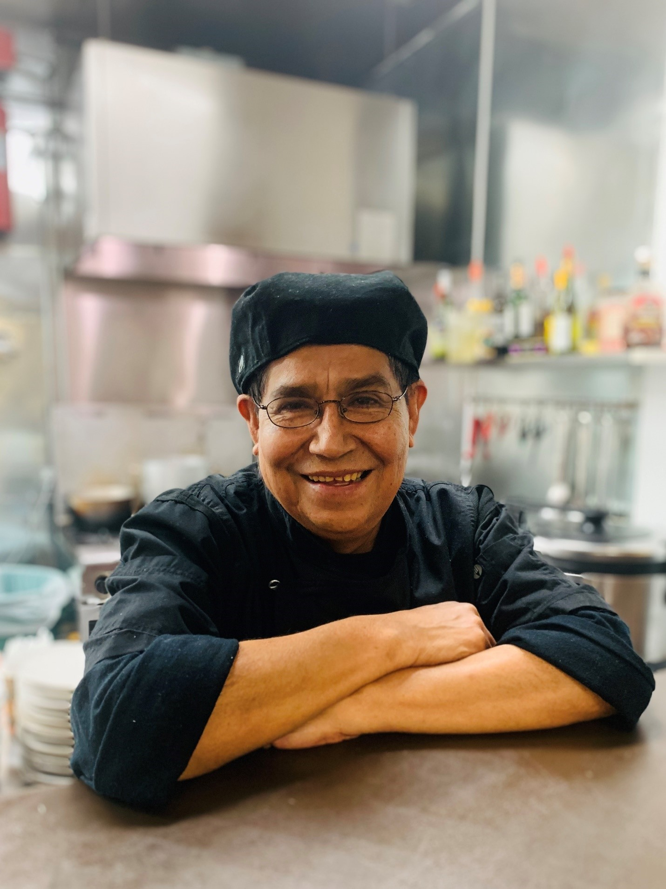

 Here at Chancay Restaurant, we specialize in quality traditional Peruvian cuisine. Chancay provides food from every region of our beautiful country of Peru – our dishes are a mix of authenticity,
creativity and style you can taste! We are committed to offering the best quality ingredients, friendly customer service and reasonable prices for a meal you will enjoy from beginning to end
Our spacious dining room can
accommodate up to 60 people, please call to make reservations for groups of 6 or more people. Additionally, we offer off-site catering services to the local business community, larger groups, and other events.
About Chef Sebastiani
Peruvian Chef Jorge Sebastiani, a well-known Bay Area Chef, brings his extensive training from Le Cordon Bleu of Culinary Arts in Paris, 20 years of experience in the restaurant and hospitality industry, and the inspiration from his travels around the world to make succulent meals, combining the finesse of a master chef with the flavors of home.